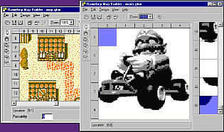
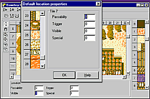

Welcome to the Gameboy Map Builder !
With the Gameboy Map Builder ("GBMB"), you can make maps which you
can incorporate in your own Gameboy productions.
Some of it's features are:

GBMB gives you a large (1024 x 1024 tiles max) canvas on which you can draw
tiles made by GBTD, which supports any tile size and color GBTD can handle.
This can be used for map or level-design. Next to that, this canvas can easily
be used for other purposes, like still pictures. Options like five levels of
zooming and a fully resizable window help you with looking at your design in
any way you want. Also, with build-in support for Gameboy Color-extensions like
vertical/ horizontal flip and 768 tiles per tileset, GBC-development is a snap.

GBMB let's you define your own properties, with which you can manage extra
storage for each location of your map. GBMB will even keep track of default
property values for each tile, making usage of properties a lot easier. These
properties can be exported in a format and size of your own choosing.
 GBMB exports directly to RGBDS Assembly-source, Objectfile ("RGB1"),
GBDK C-source, TASM Assembly-source, ISAS Assembly-source, and flat binary. The
form in which you want to export is fully definable. It even generates include
and header files, which state not only the labels, but also general info about
the exported data. Also, all settings you make are saved for each individual
map, so you don't have to remember which settings are appropriate for which map.
GBMB exports directly to RGBDS Assembly-source, Objectfile ("RGB1"),
GBDK C-source, TASM Assembly-source, ISAS Assembly-source, and flat binary. The
form in which you want to export is fully definable. It even generates include
and header files, which state not only the labels, but also general info about
the exported data. Also, all settings you make are saved for each individual
map, so you don't have to remember which settings are appropriate for which map.
GBMB is Freeware !
The Gameboy Map Builder is Freeware; you are allowed to use it in any way you
want, without paying me anything. You are also allowed (and encouraged) to
distribute this software, as long as you don't receive any payment for it. If
you want to link your home page to GBMB, be sure to link it to this site, not
directly to the downloadable file, as updates will receive different filenames.
Keep in mind that you use this software at your own risk; any damage which might
occur, in whatever form, is your own responsibility.
Installation
GBMB operates under Windows 95, 98 and NT4. GBMB does not have to be installed;
simply download and unzip the package below and start GBMB.EXE. Keep all the
accompanied files in the same directory, and associate .GBM-files to GBMB for
maximum enjoyment. Check out the included README.TXT for more info. Remember
that GBMB only works with tilesets made by GBTD, so if you don't have it
already, make sure to download it also from this site.
Download
GBMB18.ZIP: Gameboy Map Builder v1.8 - 260K
Delphi 3 source is now
available for GBMB.
History
| Version | Date |
Changes | Reported by |
| 1.8 |
2 October 1999 | NEW!
each location can have its own palette
Fix: 'Copy as Bitmap' works
for SGB colorsets
Note: Copy/paste format changed due to
location-palettes
| Various
|
| 1.7 |
28 August 1999 | NO$GMB
Filter is now optional (under "Color set")
Added various
hotkeys
Fix: C-export corrected when splitting data
Fixed usage of relative paths for GBR-files:
-Killed off AVs
-Auto Update now works for them
-Some other minor glitches
|
Various
Dark Fader
Landon Gentry
Various
Arjen
Bokhoven
|
| 1.6 |
13 August 1999 | 'Win9X
cleanup':
Fix: Copy/Paste finally works
Fix:
Much less system drag
Fix: Saved tilesets now directly updated
Note that I use NT4 myself, so if you see technical
problems on the
Win9X-platform, mail me. I will try
to handle these problems more
swiftly in the future.
|
Various
Ian McIntosh
Various
|
| 1.5 |
8 August 1999 | NO$GMB GBC
color filter (thanks to Martin)
Fix: #512> tiles are saved correctly
Fix: Only last Paste is Undone
| Various
Jeremy
Evers
Mathijs de Jonge
|
| 1.4 |
13 June 1999 | Fix: Copy
as Bitmap works again
Fix: large Pastes are undone correctly
|
Jeremy Evers
Mathijs de Jonge
|
| 1.3 |
24 May 1999 | Auto update!
(see HLP for info)
768 tile-support
Fix: Ver/Hor flip are shown
correctly
Tile Copy/Paste tweaked
MouseWheel support
|
Various
Various
Various
|
| 1.2 |
21 March 1999 | Export:
Tile offset added
Block Fill: new patterns added
Relative
filepath support (Export, Tileset)
Cleaned up Clipboard:
- Tile
Paste bug fixed
- Property Copy bug fixed
- V & H-Flip are
now copied
- Format changed; see HLP
| Jeremy
Evers
Dark Fader
Various
|
| 1.1 |
23 January 1999 | New:
ISAS export-format
New: Bank constant generated in export
Fix:
Possible AV when opening tilefiles
Fix: GUI-settings not always saved
Fix: GBDK format error
Fix: Zoom wrong in new file
|
|
| 1.0 |
17 January 1999 | Larger
maps (1024 x 1024)
More properties (32)
Less memory usage (new
mem-handling)
Build-in vert/hor flip for GBC
More predefined
export properties
New info-panel
Export: 'Split' for 16K maps
512 tiles support
|
|
NOTE: As of version 1.0, a new file-format is used. Download
GBMB Converter to convert older
files to the new format. |
| 0.9 |
29 November 1998 | Gameboy
Color support |
|
| 0.8 |
30 August 1998 | New
feature: Property colors
New feature: Copy as bitmap
|
|
| 0.7 |
22 August 1998 | Fixed
SGB/GB palette behaviour
New drawtool: Dropper
New zoom: 25%
Faster screen-draws
Fixed: Maximized forms saved incorrectly
|
Brett Bibby
Brett Bibby
|
| 0.6 |
27 July 1998 | Super
Gameboy support
New Export-setting: Map layout
Fixed 0.5 plane
export-output
|
Neil Roberts
|
| 0.5 |
5 June 1998 | New: Block
selection
NOTE: The following functions have changed due to
Block selection; see HLP for new behaviour.
- Mouse buttons (!!)
- Block Fill
- Info Panel
Cut/Copy/Paste implemented.
Selection-visibility increased.
Space bar fills current selection with
selected tile.
|
|
| 0.4 |
22 May 1998 | New feature:
Grid.
New feature: Double markers.
Undo for Insert/Delete
Row/Column.
Undo less sensitive.
Scrollbars move a page.
Cleaner GUI when loading.
Fixed: Some settings were not saved.
|
Jeff Frohwein
|
| 0.3 |
17 May 1998 | Tileset
automatically reloaded when changed.
(Partial) Undo implemented.
New feature: Block fill.
Cleaned up GBDK C export.
|
Luc van der Borre
|
| 0.2 |
2 May 1998 | Faster
screen-updates.
Infopanel-input friendlier.
'Clear map' added.
'Color set' added.
[Ctrl]-cursorkeys move the map.
Defaults
can be set in GBMB.INI.
Bug fix: Export filename not always shown
correctly.
Bug fix: RGBDS Obj could not export to bank 0.
Bug
fix: Didn't use tileset palette.
Various GUI tweaks.
|
Luc van der Borre
|
| 0.1 |
25 April 1998 |
Initial release |
|
Copyright 1999, H. Mulder.